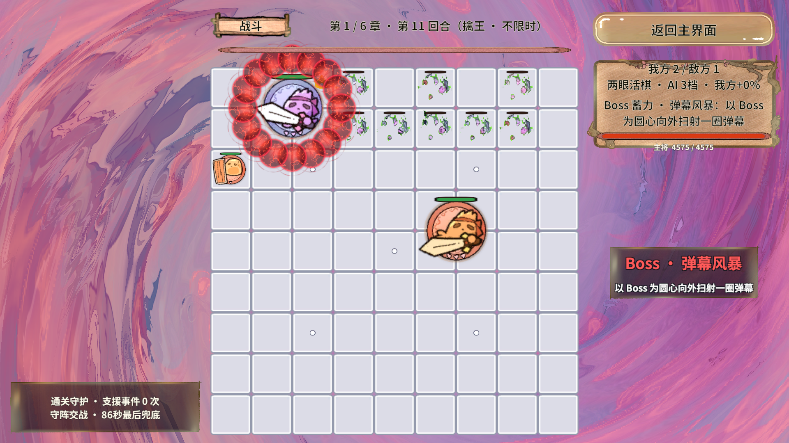
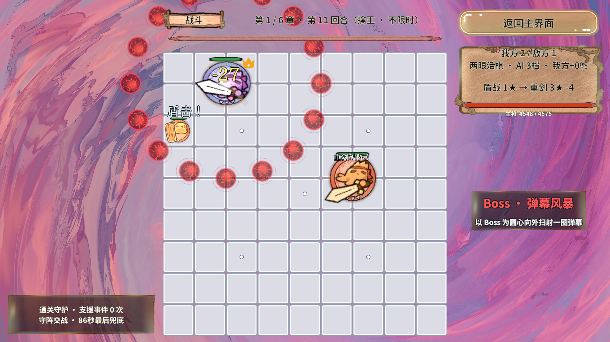
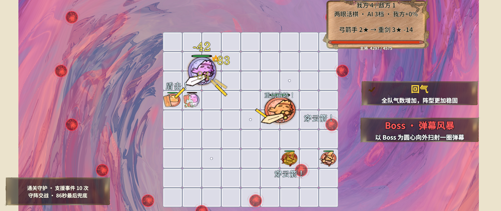
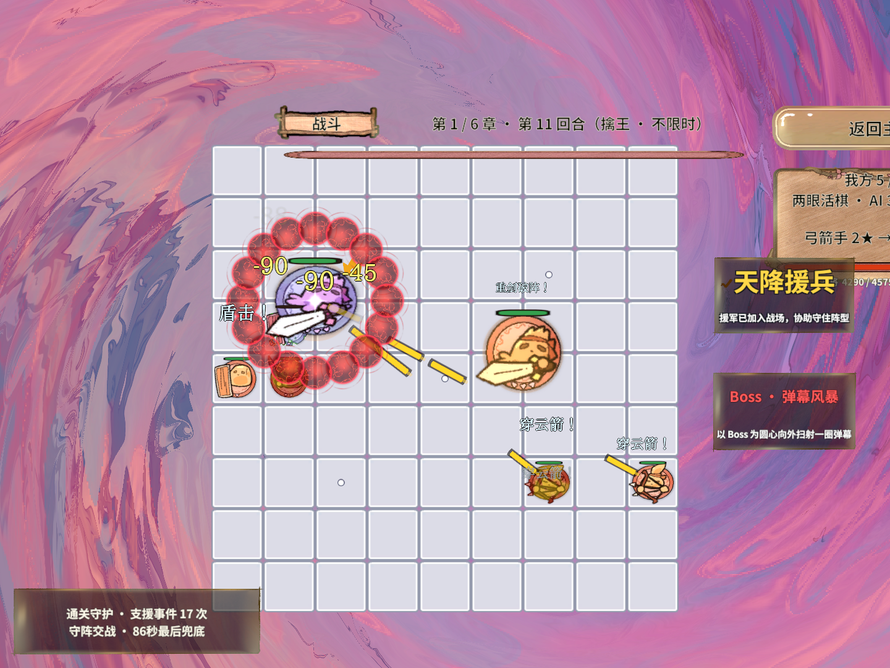
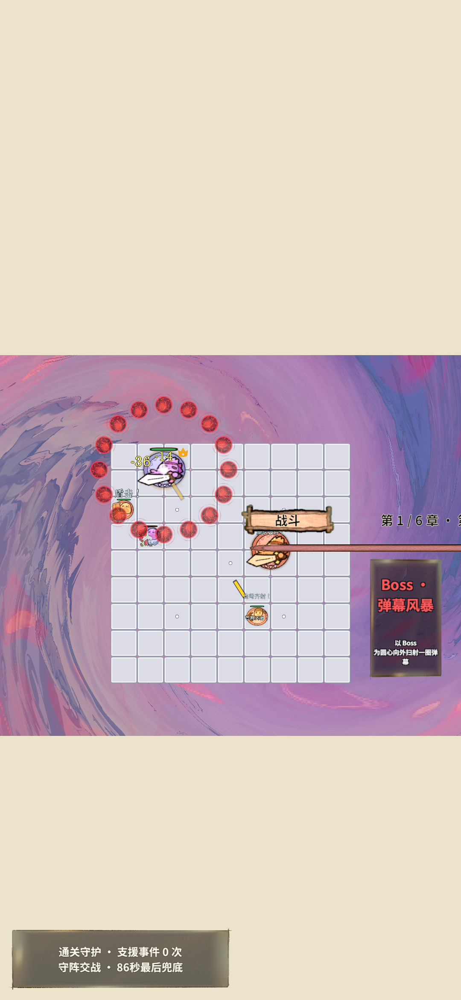
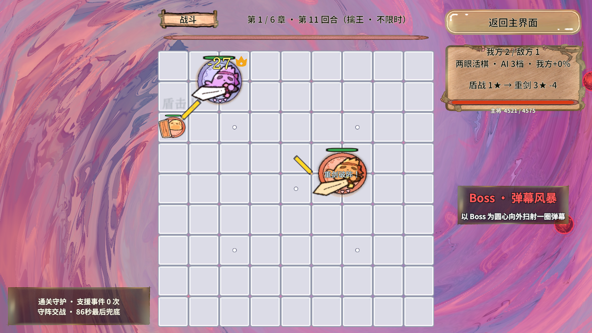

Boss 弹幕「暗红魔法球」验证结果
2026-10-22 · 拉取远程提交后的重新验证 · Unity 2022.3.15f1c1 Editor PlayMode
一句话总结：拉取
3a15526 后重新编译并重跑验证，暗红魔法球在 1920×1080、2560×1080、1440×1080、1080×2340 四种画幅下都能肉眼看到；离线回归 182 场景 / 4,171 断言全通过；九技能 Play 回归通过。真机与连续动画主观验收仍未执行。
1. 拉取与合并
| 仓库 | g:\RevRoot\MyRevGame |
|---|---|
| 拉取前 → 后 | 3115628 → 3a15526 新增玩家流程自动化与六牌强化测试，归档第一章实测报告 |
| 方式 | git pull --ff-only；本地无领先提交 |
| 冲突 | 本地未提交的 BattleService.Events.cs（我方免伤调试开关）与远程同文件改动重叠 |
| 处理 | 先备份该文件、还原后快进拉取，再把免伤开关插回 DamagePiece 开头，与远程的 ScaleAutomationIncomingDamage 共存 |
| 编译 | 通过：refresh_unity(force, compile=request) 后 Console 无 Error，远程新增的 Assets/GameScripts/Animation/* 与本地改动一起编译 |
2. 自动化桥接的坑（已记录，未改框架）
拉取后第一次 rev.cmd editor status 超时：inbox 里的请求无人消费，而 endpoint.json 心跳正常。根因是 Revolution.Editor.RevAutomationBridge._recovered 停留在 false（脚本重载 / Play 切换后 EditorApplication.delayCall 里的 Recover 没有执行），Update 里 if (!_recovered …) return; 挡住了取单分支。
本次通过反射手动调用 Recover() 恢复。按项目规则 Assets/Revolution 是框架快照，不在 RevGame 内修改，需要反馈回框架仓库。
3. 验证矩阵
| 验证项 | 结果 | 证据 |
|---|---|---|
| 离线战斗回归 | 通过：182 场景 / 4,171 断言 | dotnet run -c Release，含新增 VerifyBulletRingIsGlobal（两个远角目标各结算一次伤害） |
| 1920×1080 取证 | 通过：1/1 轮，unityErrors=0 | results/boss-orb-20261022/run-16x9/report.html |
| 2560×1080 取证 | 通过：1/1 轮，unityErrors=0 | results/boss-orb-20261022/run-21x9/report.html |
| 1440×1080 取证 | 通过：1/1 轮，unityErrors=0 | results/boss-orb-20261022/run-4x3/report.html |
| 1080×2340 竖屏取证 | 通过：1/1 轮，unityErrors=0 | results/boss-orb-20261022/run-tall/report.html |
| 九技能 Play 回归（我方免伤） | 通过：1/1 轮，failedIterations=0 | results/boss-orb-20261022/run-nine-skills/report.html |
每轮按 蓄力 → 成环 → 发射 → 早期飞行 → 中段 → 末段 连拍 6 张，共 24 张，存于 BossAI自动化测试结果-2026-10-22-附件/。
4. 截图证据






5. 本轮发现的问题（未擅自修改）
- 文案与实现不一致：
BossSkillConfig中BulletRing的Hint仍是“以 Boss 为圆心向外扫射一圈弹幕”，HUD 标题也用这句；实际已是全屏弹幕，玩家会误以为贴边能躲。 - 表字段失效：同一行
Radius=3已不参与弹幕的任何判定（选招与伤害都改为全屏收集），属于策划数值，应按规范回配置表/*.xlsx调整，不留在 C#。 - 章节解锁：
UnlockChapter=3，第 1、2 章正常游玩不会出弹幕——这正是“自己测的时候没弹幕”的原因，不是渲染失效。
第 1、2 项涉及策划文案与数值，确认后再改表并重新导表。
6. 未执行
- 真机 / 手机端 AB 冷启动的弹幕表现（当前只验证了 PC 编辑器与 PC 资源包）。
- 连续动画节奏、血条与飘字遮挡的逐帧主观验收。
- 帧时间门槛：本轮四个场景的
thresholds全为 0，数值只是观测值，不构成性能结论。 - 九技能伤害数值与段数逐值核对（
VerifyEverySkill只校验段数与副作用）。